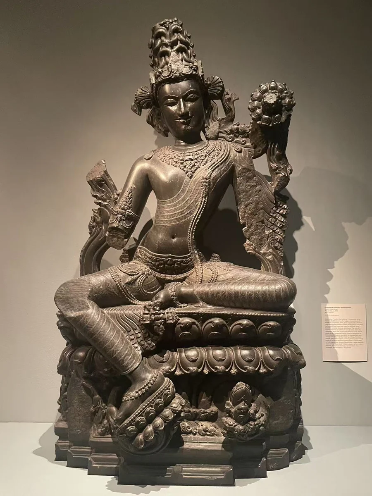
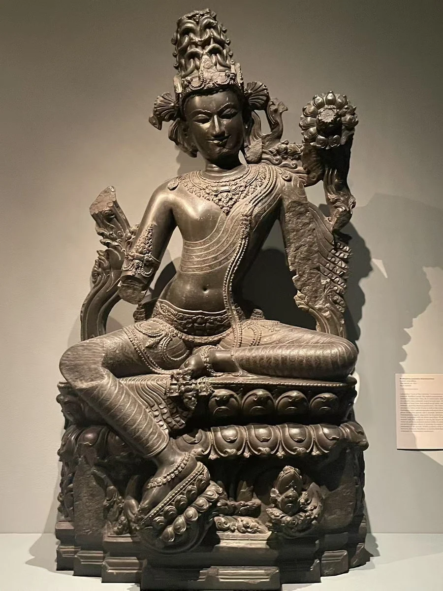

OBJECT NOTE
世间自在观音
约1100年

腰身、衣纹与垂足；莲座逐层展开的方式。
高冠与珠饰、斜伸的右腿和卷曲莲茎，使这尊大型观音在重量之中保留柔和的转折。大都会现场照与2017年佳士得Lot 233、1922年馆刊图8的残损及构图一致，可对应为原波士顿美术馆22.381号藏品。
1922年入藏、1935年售出，随后经过纽约拍卖与意大利私人收藏，再以私人借展身份进入大都会。完整的图像比较、库玛拉斯瓦米与1935年馆藏替换的讨论，集中收在帕拉专题精读。
私人收藏借展于纽约大都会；原波士顿美术馆编号22.381不是大都会馆藏号。
纽约佳士得，2017年3月14日，Lot 233；公布成交价24,663,500美元。
作品资料
- 原题名
- Bodhisattva Lokanatha Avalokiteshvara
- 年代
- 约1100年
- 材料
- 黑色绿泥石
- 尺寸
- 高147.4厘米（2017年佳士得测量）
- 收藏／展出
- 私人收藏 · 在纽约大都会艺术博物馆展出
- 原馆藏号
- 波士顿美术馆22.381（1922—1935）
- 地区与传统
- 帕拉比哈尔（地域归属）
现场资料
基本资料依据现场展签整理。Bodhisattva Lokanatha Avalokiteshvara。
私人收藏借展于纽约大都会；原波士顿美术馆编号22.381不是大都会馆藏号。
纽约佳士得，2017年3月14日，Lot 233；公布成交价24,663,500美元。
其他现场视角


资料与来源
作品基本资料据现场展签及下列馆方记录整理；文字中的观看描述基于这里的现场照片。